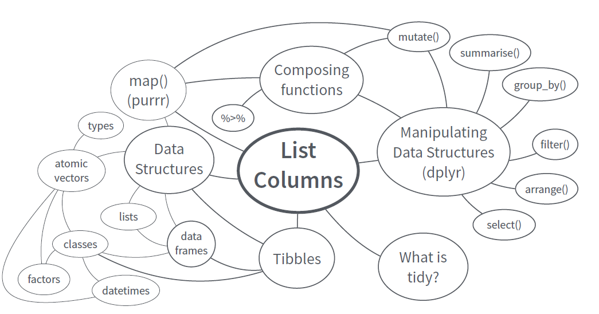

Data Science에 관심이 있는 연구자와 R 개발자를 위한 사이트로 R Markdown으로 구현
RStudio사를 중심으로 발전하고 있는 다양한 최신 R 기술과 Tidyverse와 tibble List Column 등 새로운 프로그래밍 방식 등 R 프로그래밍을 활용한 대용량 데이터의 Best Practice 소개
R을 통계분석툴 뿐 아니라 다양한 데이터 관련 애플리케이션(리포팅, 인터렉티브한 대시보드, PDF, PPT, Blog, book 등의 다양한 시각화 자료)의 개발툴로 사용하는 툴인 R Markdown과 Shiny을 소개
궁극적으로 Reproducible Research를 구현하는 Best Practice를 발굴
이를 위해 RStudio사가 제공하는 R package Cheat Sheet과 각종 자료를 활용
Introduction (2 hour ***)
Data Science and Big data Analysis (20 minutes)
Git and Github in RStudio for version control and Collaboration (10 minute)
Base R (1 hour)
Data Wrangling in the Tydiverse way (2 hours ***)
Data Structure & Tidy Data (10 minute)
Data Wrangling with R (1.5 hour)
Data Analysis with Tibble & list column (2 hours)
Function
Apply functions with purrr
Nest data & List Column
File handling (30 minutes ***)
Getting data on the web (30 minutes)
Exercise (2.5 hour)
국토교통부 아파트 실거래가 데이터 (2 hour ***)
네이버 주가정보 크롤링(1 hour)
High Performance R programming (1.5 hour ***)
Parallelization with foreach, parallel, multidplyr
data.table Package
Fast On-Disk Format for Data Frames, feather
Rdata
BIG data Analysis (2.5 hour ***)
Big data Stratege (20 minutes)
Working with Big Data in R (1 hour)
Using Database with RSQLite and MonetDB
Exercise with Flight Dataset (1 hour)
General-purpose Distributed Cluster-computing framework (20 minutes)
Spark, with sparklyr
Machine Learning with H2o
R applications (3 hours)
Reproducible Research with R markdown (between each topic)
Interactive web with Shiny (1.5 hours)

R / RStudio
git & github
dookyung.kim74@gmail.com